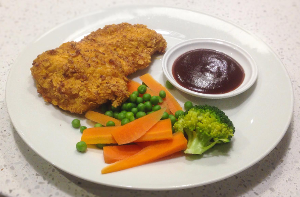
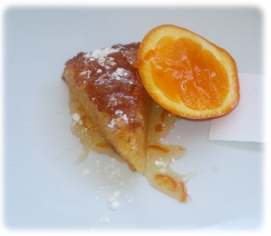

Starters
Customers are free to select a range of starters from our cold or hot platters. For example, we have recently catered to the Oxford Street party and provided them with cold platters which included: ham, chicken and pork cuts as well as a variety of vegetarian finger food.
Select your starters when you make the booking.

Many customers have a variety of guests so we have often catered to young and old at the same time. Last month we had a kindergarten staff and parent party and provided hot meals for the staff and parents. The children were provided hot finger food which was easy to clean if the children dropped any of the foods.
Select your mains when you make the booking.

Customers usually select a variety of desserts and have often included more elaborate types such as pavlova and profiterole. At the same we can also cater to customers healthier needs: freshly cut fruit, watermelon, pineapple and any other specific needs.
Select your desserts when you make the booking.